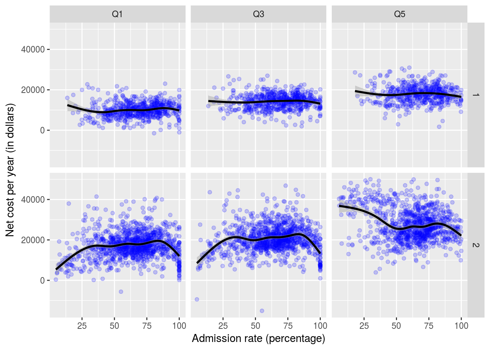

The purpose of this project is to recreate a graph that appeared in the Economist. The graph we want describes yearly cost of attending college versus college selectivity. The R libraries need are dplyr, ggplot2, and tidyr.
First we will read in the ScorecardSmall.Rda file. This is a file that contains admission rate and cost information for colleges. We are interested in just a few columns, namely CONTROL (1 for public, 2 for private), ADM_RATE (admissions rate), NPT4i_PUB (the average cost for families in the ith quintile for a public institution), and NPT4i_PRIV (similar only for private institutions). To similify things for us, we will convert the data frame into a narrow format where a column named long_name will denote the type and net will be the value of NPT4i_.
load("ScorecardSmall.Rda")
ScorecardSmall <- ScorecardSmall %>%
filter(CONTROL != 3) %>%
gather(long_name, net, NPT41_PUB, NPT43_PUB, NPT45_PUB, NPT41_PRIV, NPT43_PRIV, NPT45_PRIV) %>%
select(CONTROL, INSTNM, ADM_RATE, long_name, net) %>%
filter(complete.cases(.))Now to fix the problem of the different suffixes of PUB and PRIV, we read in a csv file and perform a left join to normalize them.
NPT4names <- read.csv("NPT4-names.csv")
ScorecardSmall <-ScorecardSmall %>%
left_join(NPT4names)## Joining, by = "long_name"## Warning: Column `long_name` joining character vector and factor, coercing
## into character vectorNow observe the head of the dataframe is as follows.
| CONTROL | INSTNM | ADM_RATE | long_name | net | short_name |
|---|---|---|---|---|---|
| 1 | Alabama A & M University | 0.8989 | NPT41_PUB | 12683 | Q1 |
| 1 | University of Alabama at Birmingham | 0.8673 | NPT41_PUB | 12361 | Q1 |
| 1 | University of Alabama in Huntsville | 0.8062 | NPT41_PUB | 14652 | Q1 |
| 1 | Alabama State University | 0.5125 | NPT41_PUB | 12342 | Q1 |
| 1 | The University of Alabama | 0.5655 | NPT41_PUB | 17206 | Q1 |
| 1 | Auburn University at Montgomery | 0.8371 | NPT41_PUB | 9044 | Q1 |
Finally we construct the desired graphs. facet_grid greatly simplifies dividing the graph into cases based on income quintile and type of school.
ScorecardSmall %>%
ggplot(aes(x=ADM_RATE*100, y = net)) +
geom_point(color = "blue", alpha = 0.2 ) +
facet_grid(CONTROL ~ short_name) +
geom_smooth(color = "black") +
labs(x = "Admission rate (percentage)", y = "Net cost per year (in dollars)")## `geom_smooth()` using method = 'gam'